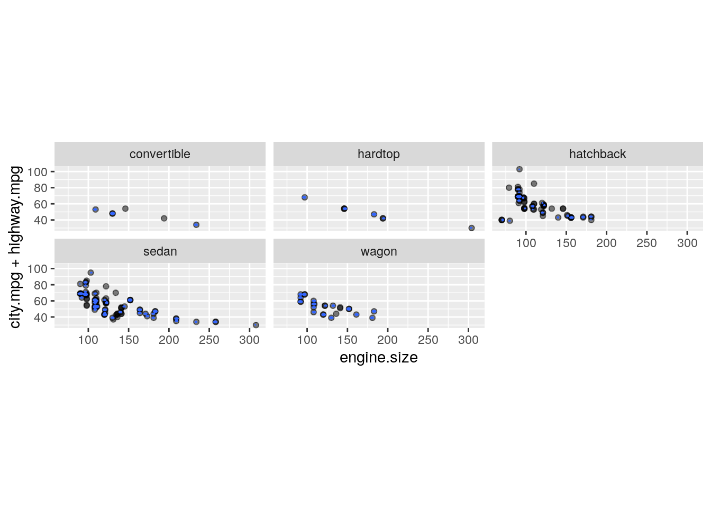
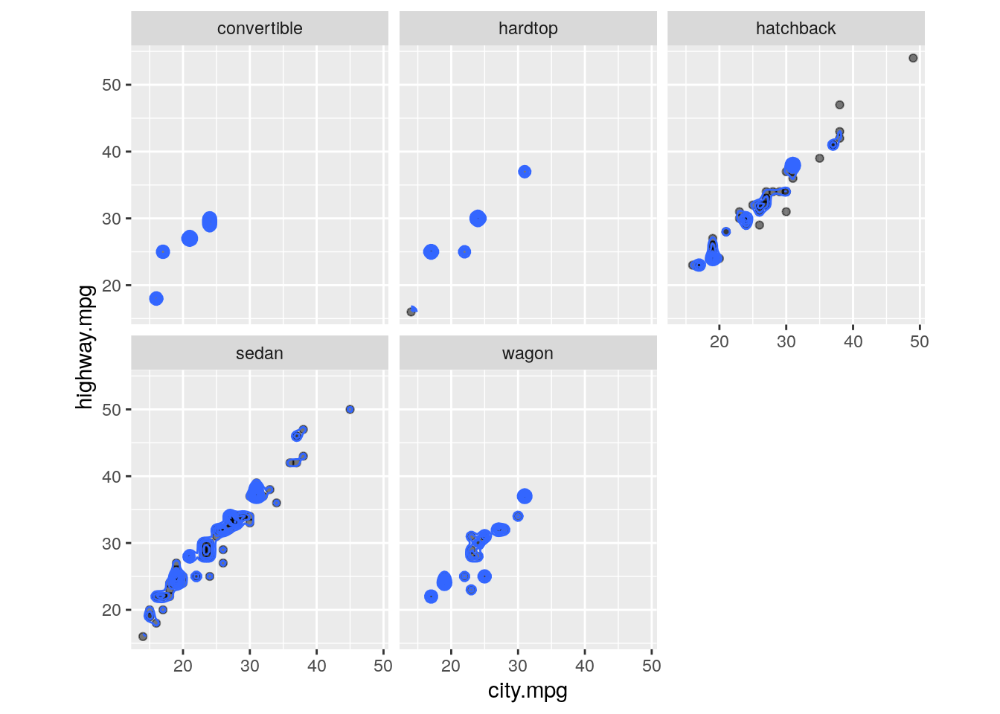
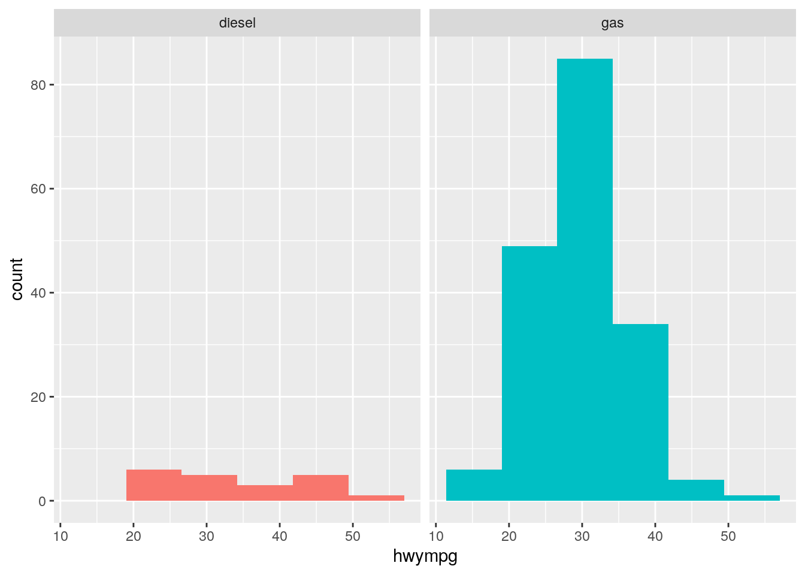
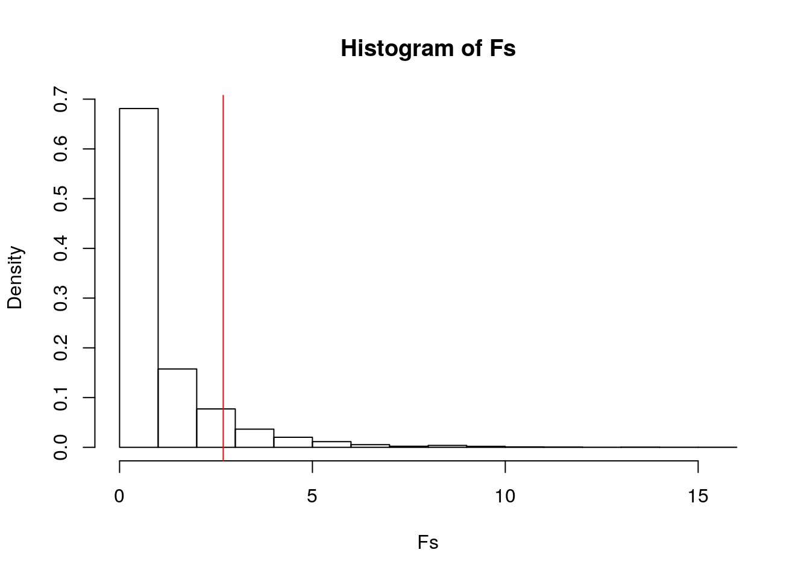
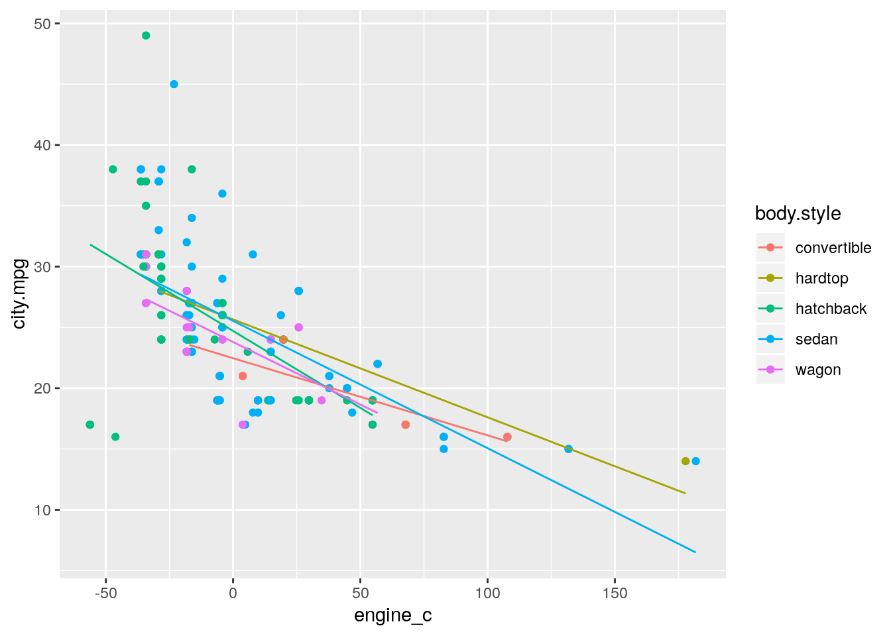
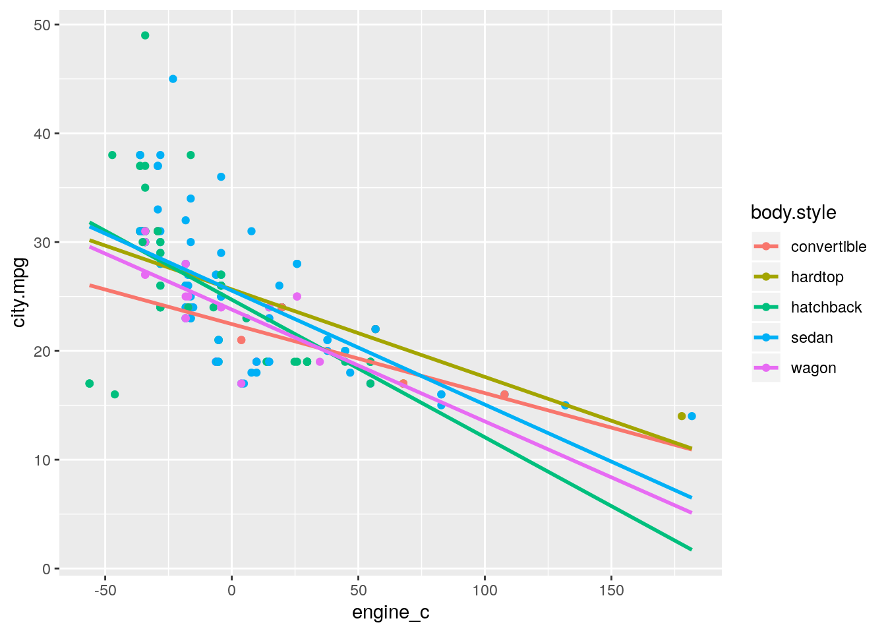
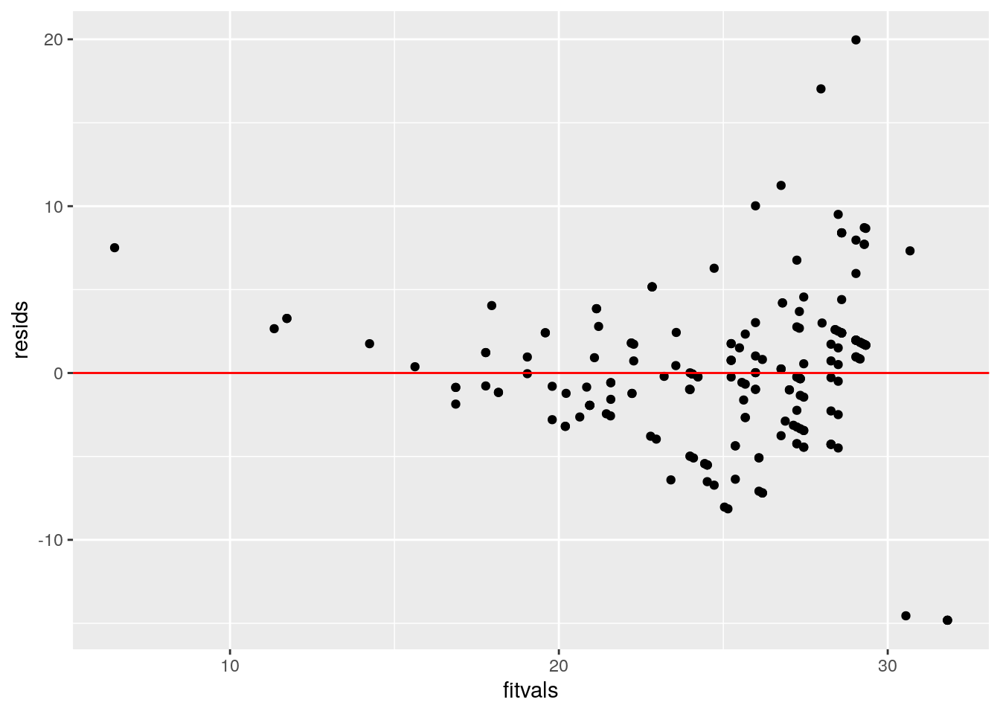
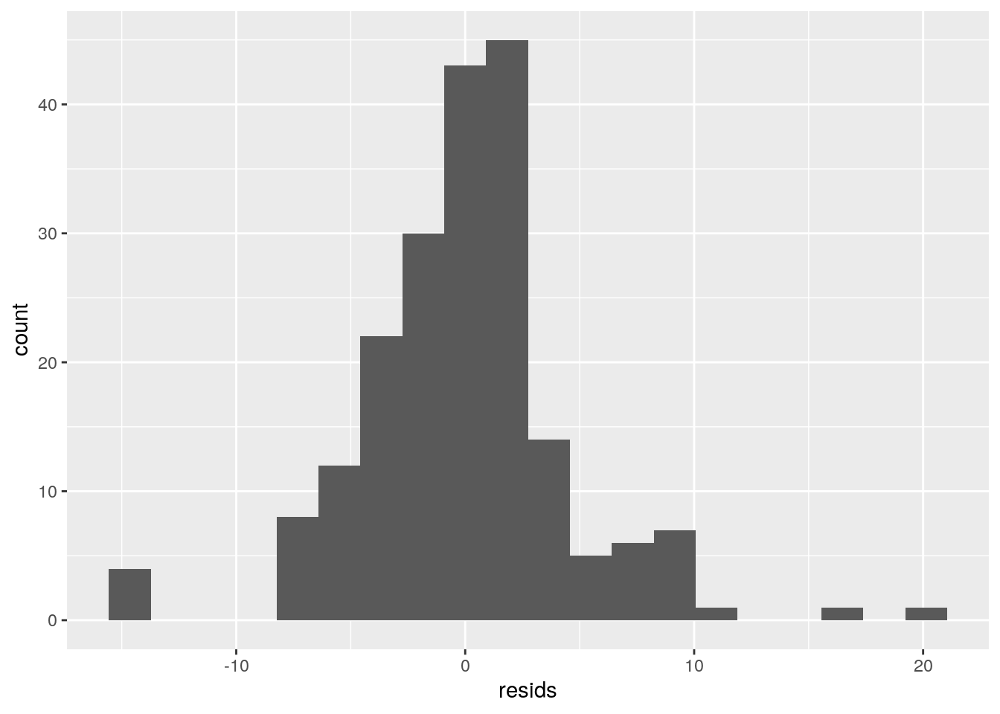
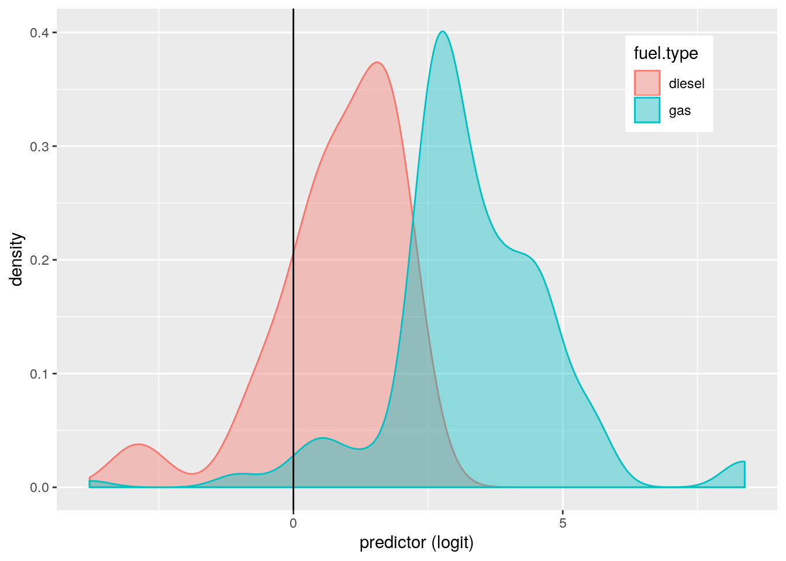
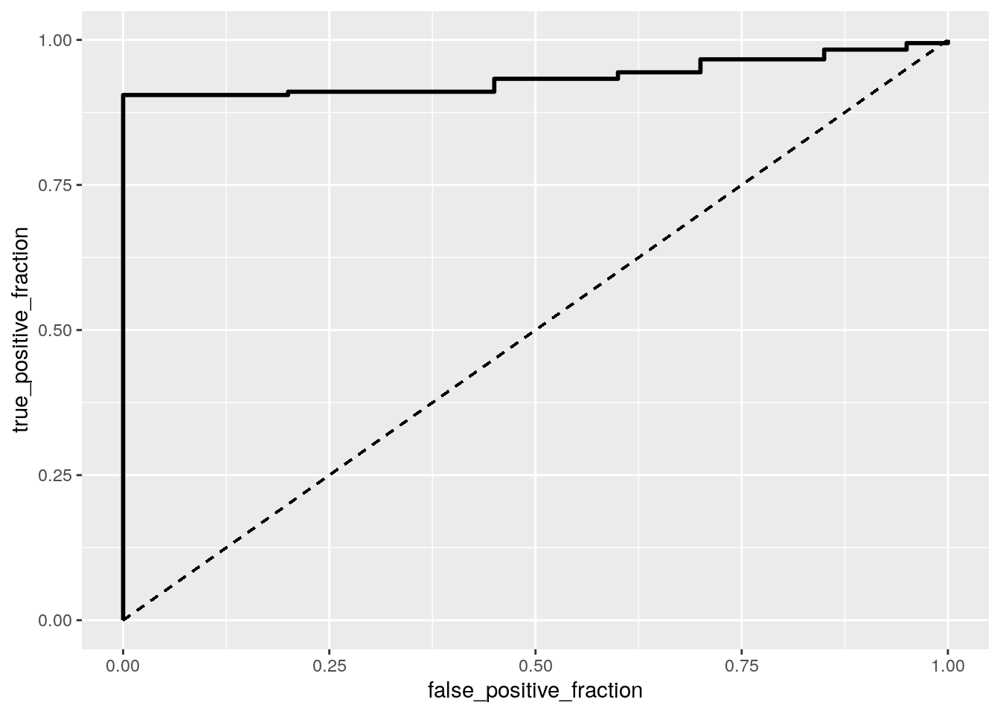

My dataset for Project 2 is entitled “Automobile” and has 6 variables: fuel-type, body-style, num-of-cylinders, engine-size, city-mpg, and highway-mpg. Three of these variables are categorical and three are numeric. The categorical variables are the fuel type of the car (gas or diesel), body style of the car (convertible, hatchback, etc.), and number of cylinders (four, five, six, etc.). The numeric variables are engine size, city miles per gallon, highway miles per gallon, and price. These variables provide information on 199 different observations. This data was found at Kaggle.com, which pulled its information from 1985 Ward’s Automotice Yearbook. I chose this dataset because my father is a mechanic and I’ve always wanted to learn about cars, so this a great way to start!
library(tidyverse)
library(readr)
Automobile <- read_csv("/stor/home/smo884/Project 2/Project2data.csv")
Automobile <- Automobile %>% rename(highway.mpg = `highway-mpg`,
body.style = `body-style`, fuel.type = `fuel-type`, num.of.cylinders = `num-of-cylinders`,
engine.size = `engine-size`, city.mpg = `city-mpg`)
# Multivariate Plots
library(ggplot2)
ggplot(Automobile, aes(x = engine.size, y = city.mpg + highway.mpg)) +
geom_point(alpha = 0.5) + geom_density_2d(h = 2) + coord_fixed() +
facet_wrap(~body.style)
ggplot(Automobile, aes(x = city.mpg, y = highway.mpg)) + geom_point(alpha = 0.5) +
geom_density_2d(h = 2) + coord_fixed() + facet_wrap(~body.style)
# Homogeneity of covariances
library(dplyr)
covmats <- Automobile %>% group_by(body.style) %>% do(covs = cov(.[4:6]))
for (i in 1:5) {
print(as.character(covmats$body.style[i]))
print(covmats$covs[i])
}## [1] "convertible"
## [[1]]
## engine.size city.mpg highway.mpg
## engine.size 2236.167 -141.9 -179.0
## city.mpg -141.900 11.5 13.0
## highway.mpg -179.000 13.0 18.4
##
## [1] "hardtop"
## [[1]]
## engine.size city.mpg highway.mpg
## engine.size 3717.3571 -299.17857 -364.92857
## city.mpg -299.1786 29.41071 30.96429
## highway.mpg -364.9286 30.96429 37.07143
##
## [1] "hatchback"
## [[1]]
## engine.size city.mpg highway.mpg
## engine.size 845.9344 -107.00814 -106.15355
## city.mpg -107.0081 44.33379 43.02284
## highway.mpg -106.1536 43.02284 43.46404
##
## [1] "sedan"
## [[1]]
## engine.size city.mpg highway.mpg
## engine.size 1665.0248 -174.45909 -199.76461
## city.mpg -174.4591 39.80318 42.56253
## highway.mpg -199.7646 42.56253 47.83403
##
## [1] "wagon"
## [[1]]
## engine.size city.mpg highway.mpg
## engine.size 722.14000 -74.24333 -90.46333
## city.mpg -74.24333 17.79000 17.92833
## highway.mpg -90.46333 17.92833 22.12667# MANOVA test
man1 <- manova(cbind(engine.size, city.mpg, highway.mpg) ~ body.style,
data = Automobile)
summary(man1)## Df Pillai approx F num Df den Df Pr(>F)
## body.style 4 0.2012 3.4867 12 582 5.397e-05 ***
## Residuals 194
## ---
## Signif. codes: 0 '***' 0.001 '**' 0.01 '*' 0.05 '.' 0.1 ' ' 1summary.aov(man1)## Response engine.size :
## Df Sum Sq Mean Sq F value Pr(>F)
## body.style 4 37601 9400.2 6.9196 3.157e-05 ***
## Residuals 194 263548 1358.5
## ---
## Signif. codes: 0 '***' 0.001 '**' 0.01 '*' 0.05 '.' 0.1 ' ' 1
##
## Response city.mpg :
## Df Sum Sq Mean Sq F value Pr(>F)
## body.style 4 348.3 87.086 2.3213 0.05826 .
## Residuals 194 7278.3 37.517
## ---
## Signif. codes: 0 '***' 0.001 '**' 0.01 '*' 0.05 '.' 0.1 ' ' 1
##
## Response highway.mpg :
## Df Sum Sq Mean Sq F value Pr(>F)
## body.style 4 451.8 112.94 2.6878 0.03256 *
## Residuals 194 8151.9 42.02
## ---
## Signif. codes: 0 '***' 0.001 '**' 0.01 '*' 0.05 '.' 0.1 ' ' 1pairwise.t.test(Automobile$engine.size, Automobile$body.style,
p.adj = "none")##
## Pairwise comparisons using t tests with pooled SD
##
## data: Automobile$engine.size and Automobile$body.style
##
## convertible hardtop hatchback sedan
## hardtop 0.33890 - - -
## hatchback 0.00611 9.8e-06 - -
## sedan 0.07738 0.00072 0.00744 -
## wagon 0.04811 0.00058 0.23852 0.48855
##
## P value adjustment method: nonepairwise.t.test(Automobile$highway.mpg, Automobile$body.style,
p.adj = "none")##
## Pairwise comparisons using t tests with pooled SD
##
## data: Automobile$highway.mpg and Automobile$body.style
##
## convertible hardtop hatchback sedan
## hardtop 0.721 - - -
## hatchback 0.029 0.048 - -
## sedan 0.085 0.148 0.194 -
## wagon 0.357 0.577 0.028 0.172
##
## P value adjustment method: none# Type I Error
1 - 0.95^14## [1] 0.512325Before performing a MANOVA test, I tested the data to make sure that it met the MANOVA assumptions. These assumptions required that the dataset include random samples and independent observations, multivariate normality of DVs, homogeneity of within-group covariance matrices, and no extreme univariate or multivariate outliers. The random sample assumption was violated because the researcher found his data in 1985 Ward’s Automotive Yearbook and did not conduct the random sampling method. The independent observations assumption is met because the occurrence of one observation does not provide any information about the occurrence of another observation. For example, the price of one automobile has no effect on the price of another automobile. The multivariate normality assumption was tested by plotting the response variables. Examination of bivariate density plots for each group revealed deparures from multivariate normality and examination of covariance matrices for each group revealed that the matrices were not homogeneous. There also appeared to be a couple of multivariate outliers, therefore it appears that most of the assumptions were violated. Despite violation of these assumptions, MANOVA was considered to be an appropriate analysis technique. I then performed a MANOVA test. The result was significant, so I decided to run univariate ANOVAs to determine exactly which are body type means are significant, or in other words, which body type group means significantly differ. One-way ANOVAs were performed for each response variable. The p-values for engine size and highway mpg are significant, but the p-value for city mpg is not significant. This means that for engine size and highway mpg, at least one body style differs! To determine exactly which body styles differ, I performed post hoc t-tests for the two ANOVAs that were significant. In total I performed 14 hypothesis tests (1 MANOVA, 3 ANOVAs, and 10 post hoc t-tests). The probability that I have made at least one type I error is about 0.5123. The boneferroni adjusted significance level that I should use is 0.00357 (0.05/14) and with this new significance level, I determined which differences were significant between groups. The hardtop is significantly different from the hatchback, sedan, and wagon in terms of engine size. Before the bonferroni correction, none of the post-hoc t-tests are significant for highway mpg.
library(tidyverse)
autorand <- data.frame(hwympg = Automobile$highway.mpg, fueltype = Automobile$fuel.type)
ggplot(autorand, aes(hwympg, fill = fueltype)) + geom_histogram(bins = 6.5) +
facet_wrap(~fueltype, ncol = 2) + theme(legend.position = "none")
autorand %>% group_by(fueltype) %>% summarize(means = mean(hwympg)) %>%
summarize(`mean_diff:` = diff(means)) %>% glimpse()## Observations: 1
## Variables: 1
## $ `mean_diff:` <dbl> -4.565642rand_wt <- vector()
for (i in 1:5000) {
new <- data.frame(hwympg = sample(autorand$hwympg), condition = autorand$fueltype)
rand_wt[i] <- mean(new[new$condition == "gas", ]$hwympg) -
mean(new[new$condition == "diesel", ]$hwympg)
}
# two-tailed p-value
mean(rand_wt > 4.5656 | rand_wt < -4.5656)## [1] 0.0018# Plot
library(vegan)
F_obs <- 2.6878
Fs <- replicate(5000, {
new <- Automobile %>% mutate(highway.mpg = sample(highway.mpg))
SSW <- new %>% group_by(fuel.type) %>% summarize(SSW = sum((highway.mpg -
mean(highway.mpg))^2)) %>% summarize(sum(SSW)) %>% pull
SSB <- new %>% mutate(mean = mean(highway.mpg)) %>% group_by(fuel.type) %>%
mutate(groupmean = mean(highway.mpg)) %>% summarize(SSB = sum((mean -
groupmean)^2)) %>% summarize(sum(SSB)) %>% pull
(SSB/1)/(SSW/197)
})
{
hist(Fs, prob = T)
abline(v = F_obs, col = "red", add = T)
}
I decided to test the association between fuel type and highway mpg, so I conducted a randomization test and found the mean difference. My null hypothesis was that the mean highway mpg is the same for gasoline and diesel cars. Conversely, my alternative hypothesis was the mean highway mpg is different for gasoline and diesel cars. Fuel type was a binary categorical variable, so I found the mean difference in highway mpg between gas and diesel cars. To begin, I created a dataframe of just these two variables from the Automobile dataset, plotted it, and found the actual mean difference between gas and diesel cars, which was -4.5656 mpg. This suggests that on average, diesel cars get highway mpg than gasoline cars by about 4.5656 mpg. I then completed 5000 random permutations. After performing all of these computations and completing the randomization test, I found the two-tailed p-value in order to determine if the test statistic is large enough to suggest that the association is not due to chance. The p-value determines the probability of observing a mean difference as large as the one I computed for the original data. The p-value was 0.0026. Because it was less than 0.05, the null hypothesis was rejected. This means that highway mpg is different for gasoline and diesel cars.
library(tidyverse)
Automobile$engine_c <- Automobile$engine.size - mean(Automobile$engine.size)
fit <- lm(city.mpg ~ body.style * engine_c, data = Automobile)
summary(fit)##
## Call:
## lm(formula = city.mpg ~ body.style * engine_c, data = Automobile)
##
## Residuals:
## Min 1Q Median 3Q Max
## -14.8172 -2.5325 -0.0596 1.9658 19.9658
##
## Coefficients:
## Estimate Std. Error t value Pr(>|t|)
## (Intercept) 22.46466 2.39811 9.368 <2e-16 ***
## body.stylehardtop 3.18795 3.28512 0.970 0.333
## body.stylehatchback 2.24262 2.48105 0.904 0.367
## body.stylesedan 3.07397 2.44901 1.255 0.211
## body.stylewagon 1.33208 2.58258 0.516 0.607
## engine_c -0.06346 0.04514 -1.406 0.161
## body.stylehardtop:engine_c -0.01702 0.05398 -0.315 0.753
## body.stylehatchback:engine_c -0.06304 0.04946 -1.275 0.204
## body.stylesedan:engine_c -0.04132 0.04676 -0.884 0.378
## body.stylewagon:engine_c -0.03935 0.05790 -0.680 0.498
## ---
## Signif. codes: 0 '***' 0.001 '**' 0.01 '*' 0.05 '.' 0.1 ' ' 1
##
## Residual standard error: 4.773 on 189 degrees of freedom
## Multiple R-squared: 0.4353, Adjusted R-squared: 0.4085
## F-statistic: 16.19 on 9 and 189 DF, p-value: < 2.2e-16summary(fit)$coef## Estimate Std. Error t value Pr(>|t|)
## (Intercept) 22.46466318 2.39811162 9.3676470 2.268429e-17
## body.stylehardtop 3.18795182 3.28511679 0.9704227 3.330761e-01
## body.stylehatchback 2.24261808 2.48104651 0.9039001 3.671991e-01
## body.stylesedan 3.07397352 2.44901122 1.2551896 2.109597e-01
## body.stylewagon 1.33208486 2.58257678 0.5157968 6.065992e-01
## engine_c -0.06345681 0.04514278 -1.4056911 1.614576e-01
## body.stylehardtop:engine_c -0.01702472 0.05397682 -0.3154079 7.527999e-01
## body.stylehatchback:engine_c -0.06304016 0.04945679 -1.2746513 2.039976e-01
## body.stylesedan:engine_c -0.04132187 0.04676126 -0.8836773 3.779931e-01
## body.stylewagon:engine_c -0.03935336 0.05790117 -0.6796643 4.975486e-01# Linear Regression Plot
library(ggplot2)
predict <- predict(fit, Automobile)
ggplot(Automobile, aes(x = engine_c, y = city.mpg, group = body.style)) +
geom_point(aes(color = body.style)) + geom_line(data = Automobile,
aes(y = predict, color = body.style))
qplot(x = engine_c, y = city.mpg, color = body.style, data = Automobile) +
stat_smooth(method = "lm", se = FALSE, fullrange = TRUE)
# Checking linearity assumption with scatterplot
resids <- fit$residuals
fitvals <- fit$fitted.values
ggplot() + geom_point(aes(fitvals, resids)) + geom_hline(yintercept = 0,
color = "red")
# Checking assumption of homoskedasticity with Breuch-Pagan
# test
library(dplyr)
library(lmtest)
library(sandwich)
bptest(fit)##
## studentized Breusch-Pagan test
##
## data: fit
## BP = 27.322, df = 9, p-value = 0.001237# Checking normality assumption with Shapiro-Wilk test and
# graphs
shapiro.test(resids)##
## Shapiro-Wilk normality test
##
## data: resids
## W = 0.946, p-value = 8.373e-07ggplot() + geom_histogram(aes(resids), bins = 20)
# Robust Standard Errors
coeftest(fit, vcov = vcovHC(fit))##
## t test of coefficients:
##
## Estimate Std. Error t value Pr(>|t|)
## (Intercept) 22.464663 0.898512 25.0021 < 2.2e-16 ***
## body.stylehardtop 3.187952 2.107921 1.5124 0.132111
## body.stylehatchback 2.242618 1.009919 2.2206 0.027567 *
## body.stylesedan 3.073974 1.025964 2.9962 0.003101 **
## body.stylewagon 1.332085 1.131754 1.1770 0.240672
## engine_c -0.063457 0.012298 -5.1598 6.221e-07 ***
## body.stylehardtop:engine_c -0.017025 0.056045 -0.3038 0.761639
## body.stylehatchback:engine_c -0.063040 0.029370 -2.1464 0.033114 *
## body.stylesedan:engine_c -0.041322 0.018523 -2.2309 0.026866 *
## body.stylewagon:engine_c -0.039353 0.028933 -1.3602 0.175398
## ---
## Signif. codes: 0 '***' 0.001 '**' 0.01 '*' 0.05 '.' 0.1 ' ' 1I performed a multiple regression test to see the effects of body style, engine size, and the interaction between the two on city mpg. In context, the intercept shows that the predicted city mpg for a convertible with an average engine size is 22.464 mpg. In cars with average engine size, city mpg is 3.188 mpg higher for hardtops than for convertibles, 2.24 mpg higher for hatchbacks, 3.07 mpg higher for sedans, and 1.33 mpg higher for wagons than for convertibles. Convertibles show a decrease of 0.06 mpg in city mpg for every 1-unit increase in engine size on average. The slope for engine size on city mpg is 0.017 less for hardtops compared to convertibles, 0.063 less for hatchbacks compared to convertibles, 0.041 less for sedans compared to convertibles, and 0.039 less for wagons compared to convertibles. The R squared is 0.4353, which means that 43.53% of variation in the outcome is explained by this model. The adjusted R squared is basically a penalty for capitalizing on chance and is therefore slightly lower at 0.4085. After interpreting the coefficient estimates, I plotted the regression using ggplot and then checked the assumptions of linearity, normality, and homoskedasticity. I checked linearity and homoskedasticity by graphing residuals on a scatterplot, and the data points appeared to fan out in the plot and appeared to depart from fitted noise, so this seems to violate both assumptions. I then formally tested homoskedasticity with a Breuch-Pagan test. The null hypothesis of the BP test was that the distribution was homoskedastic, but because the p-value was smaller than 0.05, this hypothesis was rejected. Finally, I created a histogram and found that the distribution looked pretty mound shaped and therefore normal. I formally tested normality with the Shapiro-Wilk test, and because the p-value was much smaller than 0.05, the null hypothesis stating that the true distribution is normal was rejected. The assumptions of linearity, homoskedasticity, and normality were not met. Because the distribution was heteroskedastic, robust standard errors were used. With these new regression results, 6 of the coefficient estimates were significant: the intercept, hatchback body style, sedan body style, engine_c, the interaction between hatchback body style and engine_c, and the interaction between sedan and engine_c. This is different from the test when robust SEs were not used because only the intercept was significant before, whereas with robust SEs, five additional estimates are significant.
sample <- replicate(5000, {
boot <- Automobile[sample(nrow(Automobile), replace = TRUE),
]
fit2 <- lm(city.mpg ~ body.style * engine_c, data = boot)
coef(fit2)
})
do.call(rbind, sample) %>% as.data.frame %>% summarize_all(sd,
na.rm = T)## (Intercept) body.stylehardtop body.stylehatchback body.stylesedan
## 1 1.157948 2.318568 1.229965 1.285847
## body.stylewagon engine_c body.stylehardtop:engine_c
## 1 1.336139 0.04858431 0.06243584
## body.stylehatchback:engine_c body.stylesedan:engine_c
## 1 0.05519971 1.568302
## body.stylewagon:engine_c
## 1 0.1345472I reran the same regression model with interaction as before, but this time I computed bootstrapped standard errors. Bootstrapped standard errors were used because my distribution was not normal. The bootstrap SEs decreased from the normal standard errors in the intercept and all of the body styles. The bootstrap SEs increased in the engine_c and all of the interaction categories. The bootstrap SEs increased in every category from the robust standard errors. All of the other bootstrap SEs decreased from the robust standard errors. Overall, it appears that the bootstrap errors worked as well as the normal standard errors but worse than the robust standard errors.
library(tidyverse)
library(lmtest)
data <- Automobile %>% mutate(y = ifelse(fuel.type == "gas",
1, 0))
head(data)## # A tibble: 6 x 8
## fuel.type body.style num.of.cylinders engine.size city.mpg highway.mpg
## <chr> <chr> <chr> <dbl> <dbl> <dbl>
## 1 gas convertib… four 130 21 27
## 2 gas convertib… four 130 21 27
## 3 gas hatchback six 152 19 26
## 4 gas sedan four 109 24 30
## 5 gas sedan five 136 18 22
## 6 gas sedan five 136 19 25
## # … with 2 more variables: engine_c <dbl>, y <dbl>fit3 <- glm(y ~ engine.size + city.mpg, data = data, family = binomial(link = "logit"))
coeftest(fit3)##
## z test of coefficients:
##
## Estimate Std. Error z value Pr(>|z|)
## (Intercept) 17.4260343 3.1769391 5.4852 4.131e-08 ***
## engine.size -0.0443786 0.0097614 -4.5463 5.459e-06 ***
## city.mpg -0.3495505 0.0709001 -4.9302 8.215e-07 ***
## ---
## Signif. codes: 0 '***' 0.001 '**' 0.01 '*' 0.05 '.' 0.1 ' ' 1exp(coef(fit3))## (Intercept) engine.size city.mpg
## 3.698542e+07 9.565917e-01 7.050049e-01# Confusion Matrix
Automobile$predict <- predict(fit3, data = Automobile, type = "response")
table(predict = as.numeric(Automobile$predict > 0.5), truth = Automobile$fuel.type) %>%
addmargins## truth
## predict diesel gas Sum
## 0 3 4 7
## 1 17 175 192
## Sum 20 179 199# Accuracy
(3 + 175)/199## [1] 0.8944724# Sensitivity (TPR)
175/179## [1] 0.9776536# Specificity (TNR)
3/20## [1] 0.15# Recall (PPV)
175/192## [1] 0.9114583# Density Plot
logit <- predict(fit3)
Automobile %>% ggplot() + geom_density(aes(logit, color = fuel.type,
fill = fuel.type), alpha = 0.4) + theme(legend.position = c(0.85,
0.85)) + geom_vline(xintercept = 0) + xlab("predictor (logit)")
# ROC Plot and AUC
library(pROC)
library(plotROC)
ROC0 <- Automobile %>% mutate(prob = predict(fit3, type = "response"),
prediction = ifelse(prob > 0.5, 1, 0))
ROC1 <- ROC0 %>% transmute(prob, predict, truth = fuel.type)
ROCplot <- ggplot(ROC1) + geom_roc(aes(d = truth, m = prob),
n.cuts = 0) + geom_segment(aes(x = 0, xend = 1, y = 0, yend = 1),
lty = 2)
ROCplot
calc_auc(ROCplot)## PANEL group AUC
## 1 1 -1 0.9360335# 10-Fold CV
library(tidyverse)
library(lmtest)
auto <- Automobile %>% mutate(y = ifelse(fuel.type == "gas",
1, 0))
auto$outcome <- NULL
fit4 <- glm(y ~ ., data = auto, family = "binomial")
probs <- predict(fit4, type = "response")
class_diag <- function(probs, truth) {
if (is.numeric(truth) == FALSE & is.logical(truth) == FALSE)
truth <- as.numeric(truth) - 1
tab <- table(factor(probs > 0.5, levels = c("FALSE", "TRUE")),
truth)
prediction <- ifelse(probs > 0.5, 1, 0)
acc = mean(truth == prediction)
sens = mean(prediction[truth == 1] == 1)
spec = mean(prediction[truth == 0] == 0)
ppv = mean(truth[prediction == 1] == 1)
# CALCULATE EXACT AUC
ord <- order(probs, decreasing = TRUE)
probs <- probs[ord]
truth <- truth[ord]
TPR = cumsum(truth)/max(1, sum(truth))
FPR = cumsum(!truth)/max(1, sum(!truth))
dup <- c(probs[-1] >= probs[-length(probs)], FALSE)
TPR <- c(0, TPR[!dup], 1)
FPR <- c(0, FPR[!dup], 1)
n <- length(TPR)
auc <- sum(((TPR[-1] + TPR[-n])/2) * (FPR[-1] - FPR[-n]))
data.frame(acc, sens, spec, ppv, auc)
}
# 10-fold
set.seed(1234)
k = 10
data <- auto[sample(nrow(auto)), ]
folds <- cut(seq(1:nrow(auto)), breaks = k, labels = F)
diags <- NULL
for (i in 1:k) {
train <- data[folds != i, ]
test <- data[folds == i, ]
truth <- test$y
fit5 <- glm(y ~ engine.size + city.mpg, data = train, family = "binomial")
probs1 <- predict(fit5, newdata = test, type = "response")
diags <- rbind(diags, class_diag(probs1, truth))
}
summarize_all(diags, mean)## acc sens spec ppv auc
## 1 0.8847368 0.9667105 NaN 0.9114035 0.9342492Controlling for city mpg, there is a significant effect of engine size on fuel type. Likewise, controlling for engine size, there is a significant effect of city mpg on fuel type. In other words, a car’s fuel type can be predicted from its engine size and city mpg. Because these estimates are both negative, as engine size and city mpg increase, the odds that the car’s fuel type is gasoline decreases. When engine size and city-mpg are equal to 0, the odds that the car’s fuel type is gasoline is high. This means that the smaller the engine size and the less city mpg, the more likely the car uses gasoline. Every one unit increase in engine size decreases the odds of a gasoline fuel type by a factor of 0.957 and every one unit increase in city mpg decreases the odds by a factor of 0.705. I then created a confusion matrix. In the confusion matrix, I see 4 false negatives and 17 false positives. Out of the 179 gasoline cars, the model predicted 175, so the TPR, which determines the proportion of gasoline cars correctly classified, is 0.9777. Out of the 20 cars that were not gasoline,the model predicted 3, so the TNR is 0.15. The TNR is the proportion of diesel cars correctly classified. Out of the 192 cars classified as gasoline by the model, only 175 were, so the PPV, which determines the proportion of classified gasoline cars that actually are gasoline, is 0.9115. The total accuracy, which is proportion of correctly classified cases, is 0.8945. The TPR, PPV, and accuracy are all pretty good, but the TNR is very low. The density plot gives a visual representation of the classifications–the gray has been misclassified. Right of 0, the gray area proportion represents the false positives, or diesel cars that we predicted gasoline. Left of 0, the gray area proportion represents the false negatives, or gasoline cars that we predicted diesel. The red area represents the correctly classified diesel cars and the blue area represents the correctly classified gasoline cars. I calculated the ROC plot next and AUC, which both looked pretty good. The AUC is 0.936, which is the the area under the curve. This demonstrates that the model is performing very well per AUC. After performing the 10-fold CV, I obtained an out-of-sample accuracy of 0.885, sensitivity of 0.967, and recall of 0.934. The recall from the 10-fold CV improved from above, but decreased in accuracy and sensitivity.
library(glmnet)
y <- as.matrix(Automobile$fuel.type)
x <- model.matrix(fuel.type ~ ., data = Automobile)[, -1]
head(x)## body.stylehardtop body.stylehatchback body.stylesedan body.stylewagon
## 1 0 0 0 0
## 2 0 0 0 0
## 3 0 1 0 0
## 4 0 0 1 0
## 5 0 0 1 0
## 6 0 0 1 0
## num.of.cylindersfive num.of.cylindersfour num.of.cylinderssix
## 1 0 1 0
## 2 0 1 0
## 3 0 0 1
## 4 0 1 0
## 5 1 0 0
## 6 1 0 0
## num.of.cylinderstwo engine.size city.mpg highway.mpg engine_c predict
## 1 0 130 21 27 3.79397 0.9868261
## 2 0 130 21 27 3.79397 0.9868261
## 3 0 152 19 26 25.79397 0.9826903
## 4 0 109 24 30 -17.20603 0.9852195
## 5 0 136 18 22 9.79397 0.9939320
## 6 0 136 19 25 9.79397 0.9914147x <- scale(x)
cv <- cv.glmnet(x, y, family = "binomial")
lasso <- glmnet(x, y, family = "binomial", lambda = cv$lambda.1se)
coef(lasso)## 14 x 1 sparse Matrix of class "dgCMatrix"
## s0
## (Intercept) 2.6536710
## body.stylehardtop .
## body.stylehatchback 0.5403613
## body.stylesedan .
## body.stylewagon .
## num.of.cylindersfive -0.3902034
## num.of.cylindersfour .
## num.of.cylinderssix .
## num.of.cylinderstwo .
## engine.size .
## city.mpg -0.2925875
## highway.mpg .
## engine_c .
## predict 0.6942446# 10-Fold CV
set.seed(1234)
k = 10
data <- auto[sample(nrow(auto)), ]
folds <- cut(seq(1:nrow(auto)), breaks = k, labels = F)
diags <- NULL
for (i in 1:k) {
train <- data[folds != i, ]
test <- data[folds == i, ]
truth <- test$y
fit6 <- glm(y ~ ., data = train, family = "binomial")
probs1 <- predict(fit5, newdata = test, type = "response")
diags <- rbind(diags, class_diag(probs1, truth))
}
summarize_all(diags, mean)## acc sens spec ppv auc
## 1 0.8947368 0.9772368 NaN 0.9119591 0.9342492After performing a LASSO regression, the most predictive variables were determined to be the hatchback body style, five cylinders, and city mpg, excluding the intercept and predict variable that I created. After performing the 10-fold CV, the new accuracy was found to be 0.895, the sensitivity was 0.977, the recall was 0.912, and the auc was 0.934. Compared to the logistic regression model from the 10-fold CV, which was 0.8847368, the accuracy from the LASSO regression 10-fold CV improved and this model is therefore a better fit.
Note that the echo = FALSE parameter was added to the code chunk to prevent printing of the R code that generated the plot.